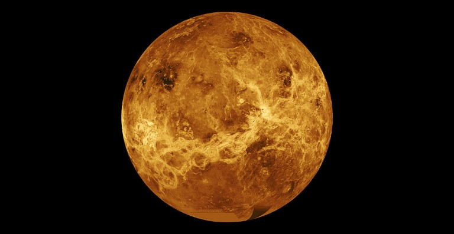
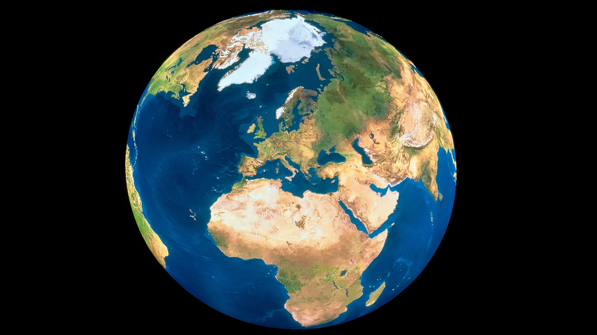
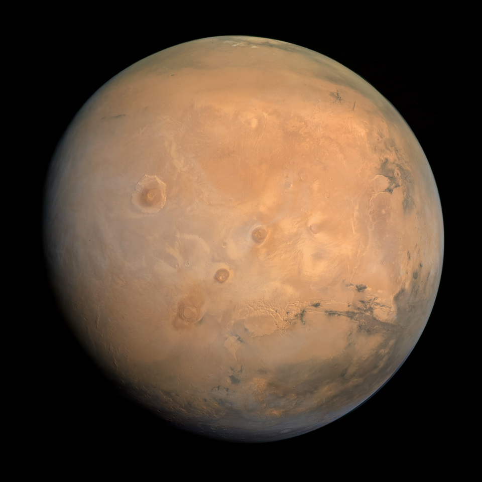

Introduction
Let's take a look and compare the neighbor planets to our beloved earth!
Venus, Earth, and Mars are the inner planets of our Solar System. They are similar in size and structure, but their surface conditions, atmospheres, and potential for life are very different. In this article, we will compare these three planets and explore their key characteristics.
-
Venus, the evil one

Venus, a planet with similar size to ours Venus is the second planet from the Sun, and Earth's closest planetary neighbor. Venus is the third-brightest object in the sky after the Sun and Moon. Venus spins slowly in the opposite direction from most planets. Venus is similar in structure and size to Earth, and is sometimes called Earth's evil twin. Let's see the differences between venus and earth:
- Size: Very close to Earth, diameter approximately 12,104 km
- Atmosphere: Thick carbon dioxide atmosphere, covered by dense clouds
- Surface Temperature: Average 464°C, the hottest planet in the Solar System
- Key Feature: Sulfuric acid clouds and a strong greenhouse effect
- Interesting Fact: Venus rotates very slowly; one day is longer than an Earth day
-
Earth, the source of life

Earth, suspiciously the only planet supporting life... Earth, our home planet, is a world unlike any other. The third planet from the sun, Earth is the only place in the known universe confirmed to host life. With a radius of 3,959 miles, Earth is the fifth-largest planet in our solar system, and it's the only one known for sure to have liquid water on its surface.
- Size: Diameter approximately 12,742 km
- Atmosphere: Nitrogen-rich, ideal mix of gases for life
- Surface Temperature: Average 15°C
- Key Feature: Presence of liquid water, the only known planet with life
- Interesting Fact: Its magnetic field, atmosphere, and water make it uniquely balanced compared to Venus and Mars
-
Mars, the god of war

Mars, the planet also known as "Red planet" Named after the Roman God of war, Mars is the fourth planet from the sun in our solar system. With a radius of 2,106 miles (3,390 kilometers), Mars is about half the size of Earth. If Earth were the size of a nickel, Mars would be about as big as a raspberry. From an average distance of 142 million miles (228 million kilometers), Mars is 1.5 astronomical units away from the Sun.
- Size: Diameter approximately 6,779 km, slightly more than half of Earth
- Atmosphere: Thin, mostly carbon dioxide
- Surface Temperature: Average -60°C, much colder at the poles
- Key Feature: Red color, huge volcanoes, and deep valleys
- Interesting Fact: Considered the most suitable candidate for future human colonization
Let's take a look at all the info in a nice table:
| Feature | Venus | Earth | Mars |
|---|---|---|---|
| Diameter (km) | 12,104 | 12,742 | 6,779 |
| Atmosphere | Dense CO₂ | N₂ + O₂ | Thin CO₂ |
| Surface Temperature | 464°C | 15°C | -60°C |
| Water | None | Yes | Frozen |